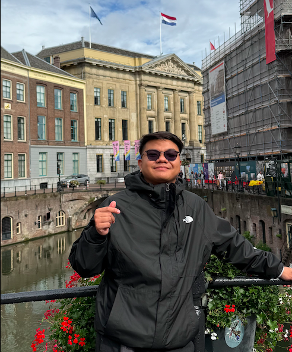

Benedict's Resume

Summary or objective statement
Motivated and detail-oriented aspiring Frontend Developer seeking a Junior
Frontend Developer or Frontend Intern position. Currently studying
Software Development at Bow Valley College while building strong technical
skills in modern web technologies including HTML, CSS, JavaScript, and
React. Brings professional experience from the hospitality industry with
excellent communication, problem-solving, and teamwork abilities. Eager to
apply technical knowledge and a strong work ethic to contribute to
real-world projects and continue growing as a developer.
Education
-
Software Development DiplomaBow Valley College – Calgary,
CanadaSeptember 2025 – Present
-
Udemy – Full Stack Web Development CourseCompleted in 2025Topics
studied: HTML, CSS, JavaScript, Node.js, React, PostgreSQL, Web3, and
DApps
-
High School Diploma – Hospitality ManagementVocational High School,
Italy2019 – 2023
Work experience
-
Hotel Receptionist – Hotel Mercure Sunbay Park – Civitavecchia, Italy
(Summer Internship)
- Assisted guests with check-in and check-out procedures
- Managed reservations and customer inquiries
- Utilized hotel management systems such as Opera and WebHotel
- Developed strong customer service and communication skills
-
Hotel Receptionist at Hotel Mercure Filippo II in Porto Santo Stefano,
Tuscany, Italy (Summer Internship)
- Provided front desk support in a 4-star hotel environment
- Handled administrative and guest relations tasks
- Worked effectively in a fast-paced, team-based environment
-
Hotel Receptionist at Casa Camper Berlin 4-Star Hotel in Berlin, Germany
(4 months Erasmus Program)
- Participated in an international work exchange program
-
Delivered professional guest services in a multicultural environment
- Strengthened language, teamwork, and problem-solving skills
-
Hotel Receptionist Meininger Hotels in Milan, Italy
- Managed daily front desk operations
- Used systems such as Si-hot and Addipos
- Handled customer concerns professionally
-
Collaborated with hotel departments to ensure smooth operations
Skills
- Technical Skills
- Web3 and DApp fundamentals
- Software & Tools
- Soft Skills
- Strong communication and listening skills
- Teamwork and collaboration
- Fast learner and highly adaptable
- Problem-solving and customer service
- Time management and organization
Awards, certifications, or other achievements
- Udemy Certificate – Full Stack Web Development (2025)
-
Erasmus+ International Work Experience Program – Berlin, Germany
- Multiple internships in 4-star hotels across Italy and Germany
-
Practical experience with professional hotel management software
Other
Hobbies
Contact me